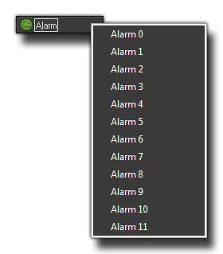

The Alarm Events
The Alarm Events
The alarm event is split into 12 sub events, one for each of the possible alarms that can be set in an instance. So, when you click on the add alarm button you are presented with this window : 
Here you select the alarm that you wish to create and, once that is done, you will see that it has been added to the event window allowing you to add actions to it as normal. But what is an alarm? Well, it is a special event that does nothing unless the alarm has been previously set, and then it will wait until that alarm has counted down to 0 before running the actions or code that you have added into it. So, say you set alarm[0] in the create event of the object to 30, this means that GameMaker:Studio will count down 30 game cycles (steps) before it runs the actions or code that are placed in the alarm[0] event.
This can be very useful as it allows you to set things in motion at precise moments, and you can even have them repeat as there is nothing to stop you setting an alarm in its own event! Imagine you have a monster and you want it to turn right every three seconds... well, you would set an alarm in its create event to the room speed*3 (if the room speed is 30, that's 30 steps per second, so multiply that by 3 and you get 3 seconds!) and then in the alarm event you would have the code or action to set its direction, as well as the action (or code) to set its alarm to room speed*30 again. In this way, you can set up simple game loops where things only happen at specific intervals.
NOTE: An alarm with no actions in it will not run. However, even with just a comment and no code, the alarm will count down.